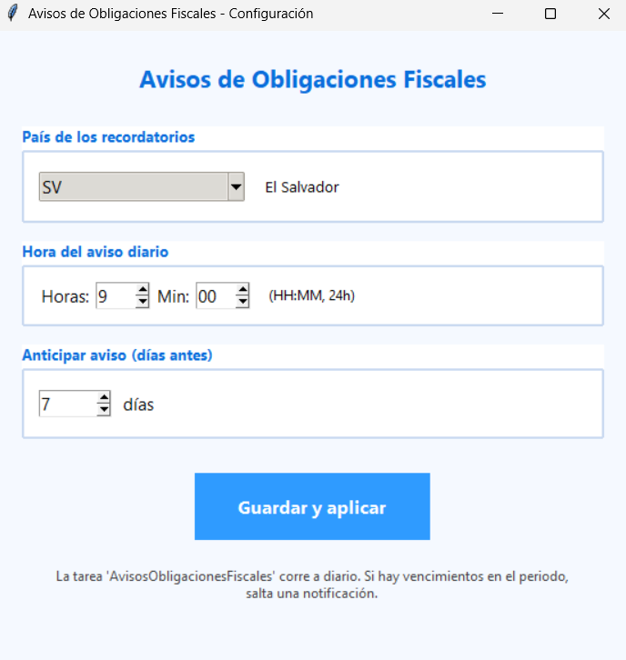
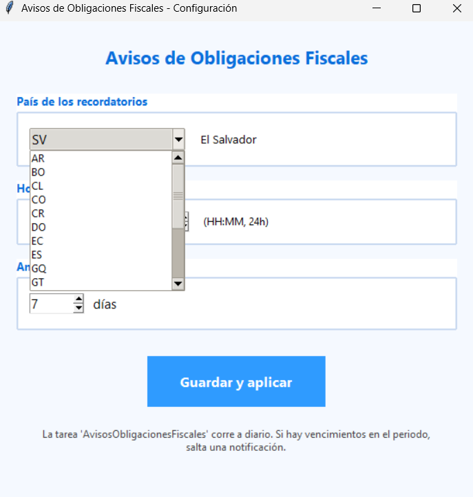
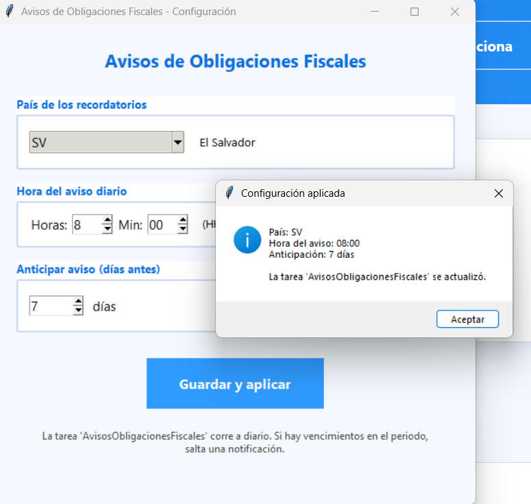

Recordatorio de Obligaciones Fiscales detecta los vencimientos de IVA, renta, retenciones y seguridad social de tu país y te avisa antes de que lleguen. Gratis, local y en tu idioma.
Todo lo que un contador necesita para no perder una fecha, en un solo programa:
Una tarea diaria revisa los vencimientos y te avisa antes de cada fecha.
El Salvador, Guatemala, México, Colombia, España… con las obligaciones reales de cada autoridad.
Elige tu país, la hora del aviso y los días de antelación en una ventana clara.
Detecta versiones nuevas y te avisa para que los datos estén siempre frescos.
Tus datos no salen de tu computadora. Privacidad total.
Transparente y colaborativo. Cualquier contador puede mejorar los datos de su país.
Elige tu país, cuántos días antes quieres que te avise y a qué hora. El programa y Windows se encargan del resto.



Las experiencias de quienes ya lo usan.
🚧 Tus palabras van aquí
Los primeros usuarios reales dejan aquí su experiencia. ¿Eres uno? Escríbenos y compártela.
🚧 Tus palabras van aquí
Este espacio se llenará con testimonios reales de la comunidad.
El recordatorio gratuito cubre las fechas oficiales. Pero si manejas fechas que no están en ningún calendario — entregas a clientes, plazos internos, auditorías — eso lo resuelve DescargarFacturas.
Descarga tus facturas del correo automáticamente, las organiza por país, año, mes y tipo, crea recordatorios personalizados y exporta a CSV para tus declaraciones.
Descárgalo, elige tu país y deja de preocuparte por las fechas.
⬇ Descargar Gratis Ahora